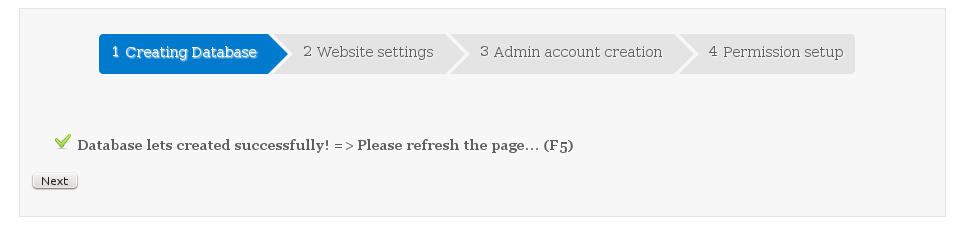
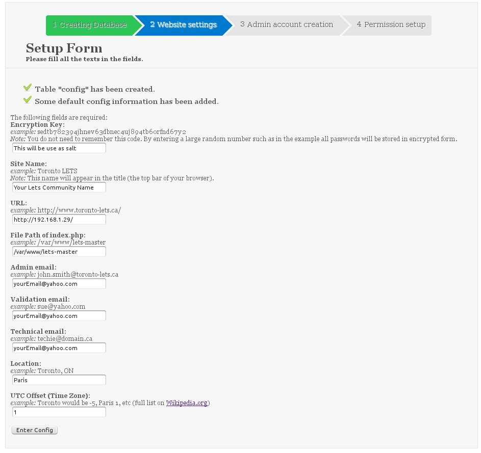
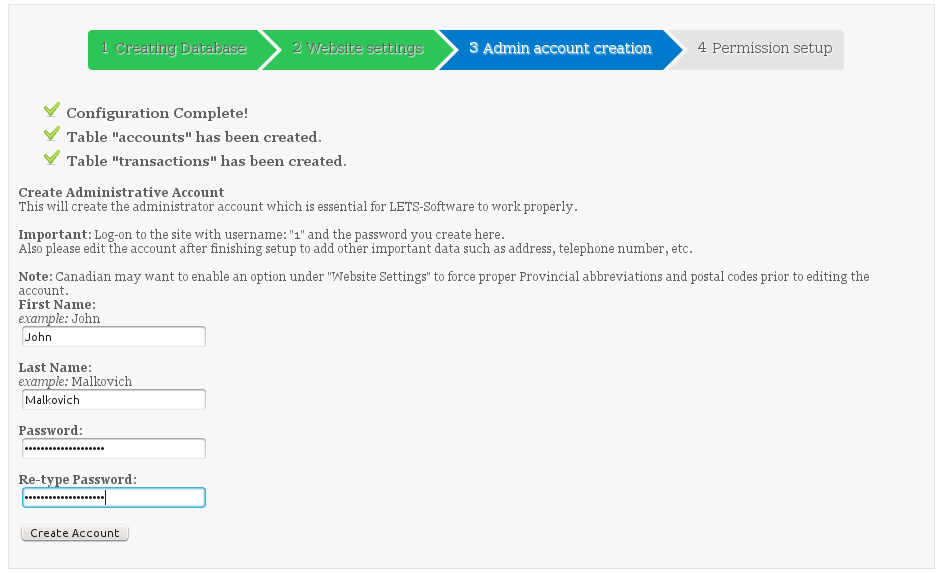
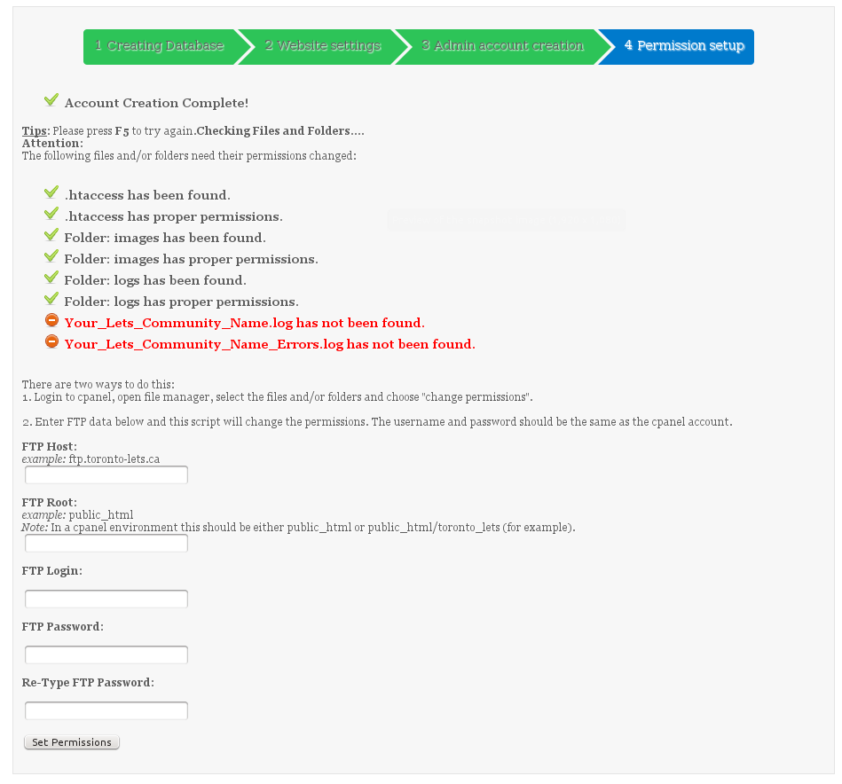

We will not cover the installation of Ubuntu here, please refer to the ubuntu web site for that.
1. Once ubuntu is install, open a terminal and login as root:
sudo su -
We first make sure we have the lates updates:
apt-get update && apt-get upgrade
apt-get install apache2 php5 php5-gd mysql-server unzip
2. Download and install LETS-software:
adduser letsuser
cd /var/www
wget https://github.com/lets-software/lets/archive/master.zip
unzip master.zip
Change the owner and permissions of the lets-master folder created by the previous command:
chown -R letsuser:www-data lets-master
chmod 775 lets-master
Edit the file lets-master/includes/configdb.php and change the credentials to match your database connexion settings:
vi lets-master/includes/configdb.php
$database_host = "localhost";
$database_name = "lets";
$database_user = "lets";
$database_password = "linux";
Go to your apache settings folder and setup LETS-Software
cd /etc/apache2/sites-available/
a2dissite 000-default.conf
cp 000-default.conf lets.conf
vi lets.conf
Change the file so it looks like the following:
<VirtualHost *:80>
ServerAdmin webmaster@localhost
DocumentRoot /var/www/lets-master
<directory /var/www/lets-master>
AllowOverride All
Require all granted
</directory>
CustomLog ${APACHE_LOG_DIR}/access.log combined
</VirtualHost>
Let's enable our new site:
a2ensite lets.conf
Enable the apache mode_rewrite:
a2enmod rewrite
Restart apache to take the new configuration into effect:
service apache2 restart
In a web browser type the IP address or the domain name that will point to your new site:
In our example it's "http://192.168.1.29" =>
You should arrive to the following page:

Just click Next or F5


